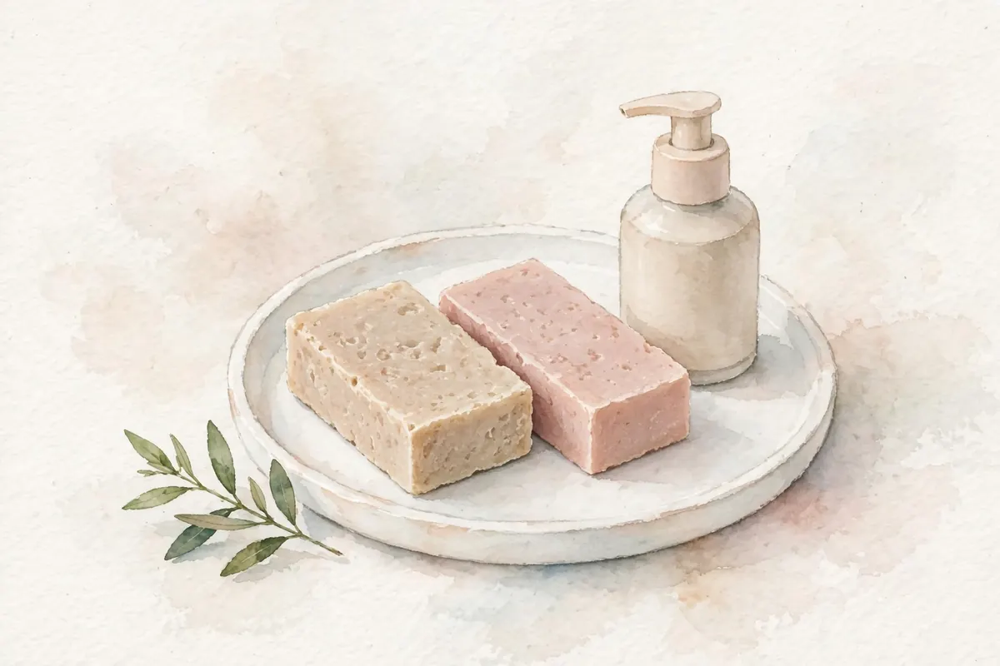

トップ ＞ ボディケア ＞ ボディソープと石けん、表示の違いの読み方
ボディソープと石けん、表示の違いの読み方

体を洗うアイテムには、ボディソープと石けんがあります。どちらも体を洗うものですが、形も表示も違います。この記事では、ボディソープと石けんの表示の違いの読み方と、使い分けの目安を、現役セラピストの視点で整理します。
形の違いと、表示の見方
ボディソープは、液体のタイプが多く、ポンプやチューブの容器に入っています。使う量は、ポンプを押す回数や、手に取る量で調整します。パッケージには「1回あたりの使用量の目安」や「ポンプ1回分」といった案内が書かれていることがあります。泡で出てくるタイプのものは、泡立てる手間が少なく、手のひらでそのまま使えます。
石けんは、固形のタイプが多く、紙の箱や袋に入っています。使うときは、水で濡らして手やタオルで泡立てます。固形の石けんは、使い始めは大きく、使うほど小さくなります。置き場所は、水が切れる石けん置きが基本で、濡れたまま箱に戻すと、ふやけてしまうことがあります。パッケージには、内容量がグラムで書かれていることが多く、使い切るまでの期間は、使う回数と1回あたりの量で変わります。
「石けん」と書かれているものと、そうでないもの
パッケージに「石けん」と書かれているものと、そうでないものがあります。固形のものでも、表示の分類が「石けん」ではないものもあります。表示の分類は、成分の組み合わせや、製造の方法によって決まります。固形だから石けん、液体だからボディソープ、と形だけで判断するのではなく、パッケージの裏面にある表示の分類を確認するのが確実です。
また、ボディソープのなかには、「弱酸性」や「無香料」といった表示のあるものもあります。これらの表示は、商品の特徴を表すものです。肌がゆらぎやすい時期や、香りの好みがある人は、こうした表示を手がかりに選ぶと、選び方が整理しやすくなります。表示に書かれている言葉の意味がわからないときは、メーカーの相談窓口や、販売店の表示を確認するのが確実です。
使い分けの目安と、保管の注意
ボディソープと石けんの使い分けは、使う場所と、使う人の好みで決めるのが、私の考え方です。家族で使う場合は、ポンプ式のボディソープのほうが、量の調整がしやすく、衛生面でも分けやすいことがあります。ひとりで使う場合は、固形の石けんのほうが、使い切るまでの期間が見えやすく、置き場所も取りません。旅行や出張のときは、固形の石けんを小さく切って持っていく人もいます。
保管の注意点は、どちらのタイプも同じで、湿気を避けることです。ボディソープは、ポンプの口を清潔に保ち、詰め替えるときは容器の内側を洗って乾かしてから入れるのが基本です。石けんは、水が切れる場所に置き、使い終わったら箱に戻さず、石けん置きに置いて乾かします。濡れたまま箱に戻すと、石けんがふやけて、使いにくくなります。
泡立ての道具も、使い心地に関わります。泡立てネットやボディタオルを使うと、少ない量でも泡が立ちやすくなります。ネットは、使ったあとによくすすいで、水を切って乾かしておきます。ボディタオルは、使うたびに洗って干すのが基本で、濡れたまま丸めて置くと、乾きにくくなります。泡の量は、手のひらにのせたときにこぼれない程度が目安です。泡が多すぎると流す時間が長くなり、少なすぎると肌の上をこする感じになるので、量と泡立て方のバランスを見てください。
ボディソープと石けんは、形も表示も違いますが、どちらも体を洗うための道具です。表示の分類と、使う場所や人数を考えて、自分に合ったほうを選んでみてください。
セラフィナ「形だけで判断しないで、裏面の表示の分類を見るんだね。置き場所は水切りが基本だよ」

セラフィナ｜美容の道具箱の案内役
「量と表示が分かれば、美容は失敗しない。」——セラフィナと白猫のモコが、買う前のチェックポイントを案内します。綺麗になりたい気持ちに正直に、でも表示は冷静に読むのが、このサイトの約束です。